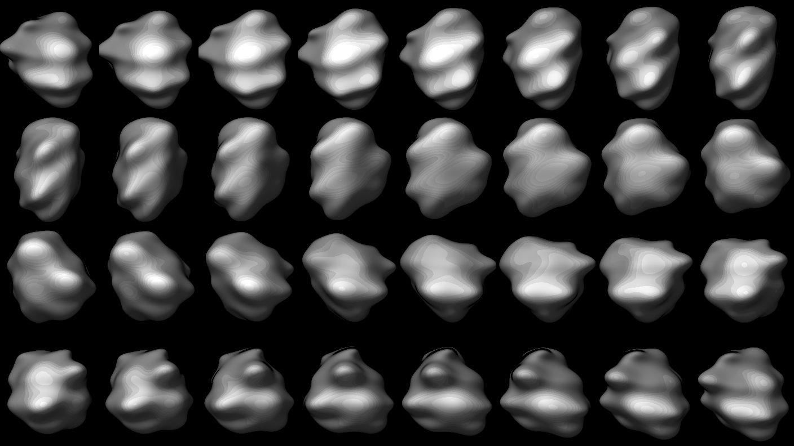
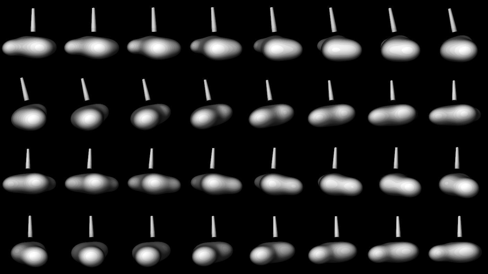

Don't just track the market—narrate it. Generate watermarked, high-fidelity chart snapshots and broadcast your thesis to your audience instantly.

Don't just share a screenshot. Publish interactive market snapshots that allow your team to inspect the data behind your thesis.